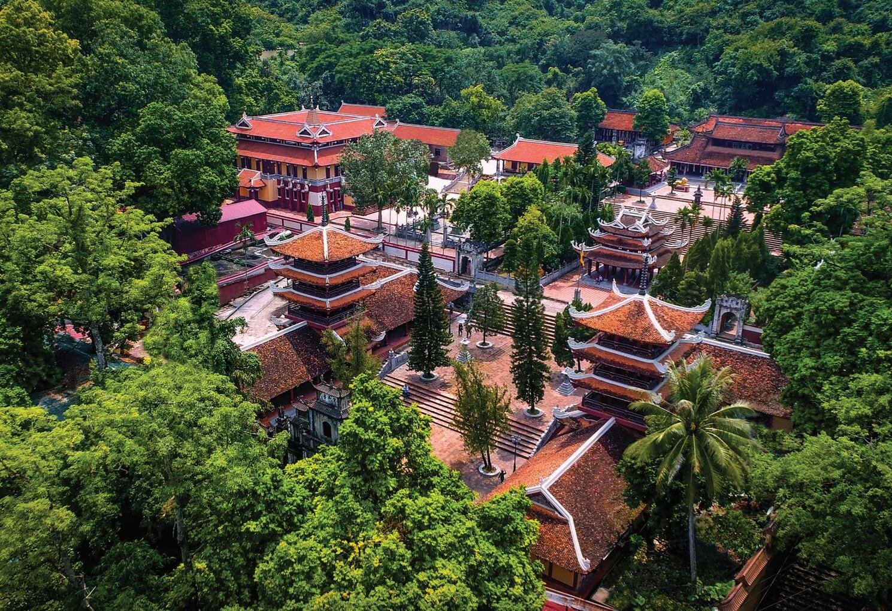

Lịch sử ra đời
Chùa Hương có lịch sử từ thế kỷ 15, được xây dựng với quy mô chính vào khoảng cuối thế kỷ 17, sau đó bị hủy hoại trong chiến tranh Đông Dương năm 1947 rồi được phục dựng lại từ năm 1989 bởi Hòa thượng Thích Viên Thành dưới sự chỉ dạy của cố Hoà thượng Thích Thanh Chân.
Từ xưa đến nay chùa Hương luôn là một nét độc đáo trong văn hóa tín ngưỡng của người dân miền Bắc nói chung và người dân Hà Nội nói riêng. Đây cũng là địa điểm thu hút nhiều người dân khắp mọi miền cả nước đến tham quan và dâng lễ đặc biệt là vào mùa lễ hội.
Tổng quan về chùa Hương - Ngôi chùa nổi tiếng bậc nhất đất Hà Nội xưa và nay
Khám phá truyền thống
1. Đôi nét về chùa Hương
Nếu bạn chọn đò là phương tiện tham quan chùa Hương thì bạn sẽ phải trả vé thắng cảnh là 80.000 VNĐ/khách và vé đò là 50.000 VNĐ/khách cho tuyến đền Trình - chùa Thiên Trù - động Hương Tích.
Nếu bạn muốn đi theo tuyến Tuyết Sơn, Long Vân thì giá đò là 35.000 VNĐ/người.
Giá vé cáp treo: 120.000 VNĐ/vé 1 chiều, 180.000 VNĐ/vé khứ hồi đối với người lớn; 90.000 VNĐ/vé 1 chiều, 120.000 VNĐ/vé khứ hồi đối với trẻ em cao dưới 1.2m.
Việt Nam là một trong những quốc gia với nhiều văn hóa tín ngưỡng khác nhau đặc biệt là Phật giáo. Nhắc tới Phật giáo Việt Nam không thể không kể đến hàng loạt các ngôi chùa có lịch sử rất lâu đời như Linh Quy Pháp Ấn, chùa Thiên Mụ,... và không thể không nói tới chùa Hương. Chùa Hương được tọa lạc ven bờ sông Đáy thuộc xã Hương Sơn, huyện Đức Mỹ cách trung tâm thành phố Hà Nội 65km. Đây là một quần thể chùa mang trong mình nét đẹp xưa cũ cũng như nhiều giá trị lịch sử, văn hóa và tín ngưỡng của người dân miền Bắc.

2. Bề dày lịch sử của chùa Hương
Có nhiều thuyết cho rằng chùa Hương hay tên gọi đầy đủ là chùa Hương Sơn được xây dựng vào thế kỷ 17 nhưng thực chất chùa Hương được xây dựng vào thế kỷ 15. Tương truyền năm 1442 - 1497 có ba vị hòa thượng đã tìm ra động Hương Tích dựng lên thảo am Thiên Trù. Lúc đó động Hương Tích là chùa trong, thảo am Thiên Trù là chùa ngoài và gọi chung hai nơi này là chùa Hương hay Hương Thiên Bảo Sái
.
Tuy được hình thành lâu đời nhưng một trong những người có công đưa chùa Hương vào nét văn hóa tín ngưỡng của người dân miền Bắc chính là chúa Trịnh Sâm. Ông cũng chính là người đã đặt nền móng hình thành lễ hội chùa Hương và tập tục đi dâng lễ vào mùng 6 tháng Giêng hàng năm.
Nhưng trong cuộc kháng chiến chống Pháp năm 1947 quần thể chùa Hương đã bị hủy hoại một cách nghiêm trọng. Đến năm 1988, dưới sự chỉ dạy của cố hòa thượng Thích Thanh Chân, hòa thượng Thích Viên Thành mới nhận thấy giá trị to lớn của quần thể chùa Hương đối với người dân thủ đô nói riêng và miền Bắc nói chung mà chùa Hương mới được khôi phục lại.
3.Cách thức di chuyển đến tham quan quần thể chùa Hương
Đền Trình
Điểm đến đầu tiên khi tham quan quần thể chùa Hương chính là đền Trình. Đây là nơi thờ Quan Tư Mã Hùng Lang - vị thần tướng có công đánh giặc Ân, phò vua Hùng Vương thứ VI. Ngoài ra đây cũng là nơi diễn ra lễ khai sơn nhằm xin phép thần rừng được vào rừng bái lễ và làm ăn sinh sống vào mùng 6 tháng Giêng hàng năm.
Chùa thiên trì
Một trong hai ngôi chùa chính của quần thể chùa Hương là chùa Trò mà tên chữ chính là chùa Thiên Trù. Nơi đây là một thiền viện lớn để cho các tu sĩ tu tập cũng như lưu giữ kinh, luật, luận của đạo Phật. Chùa có lối thiết kế hài hòa với tam bảo, tiền đường, nhà thờ tổ, nhà thờ mẫu, nhà khách... cũng là nơi dùng bữa và nghỉ lại của các tín đồ từ khắp mọi nơi khi đến thăm quần thể chùa Hương.
Chùa hương tích
Thật là thiếu sót khi nhắc đến quần thể chùa Hương mà không nhắc đến chùa Hương Tích - ngôi chùa được dùng để đặt tên cho quần thể chùa Hương. Nếu những kiến trúc bên ngoài được tô vẽ bằng bàn tay những người thợ thủ công lành nghề của thế hệ trước thì chùa Hương Tích hay còn gọi là chùa Trong lại nằm một hang động cổ. Bước đến lối vào động, bạn sẽ được chiêm ngưỡng dòng chữ “Nam thiên đệ nhất động” - một trong những bút tích hiếm hoi còn sót lại của chúa Trịnh Sâm khi chúa tuần du qua nơi đây.